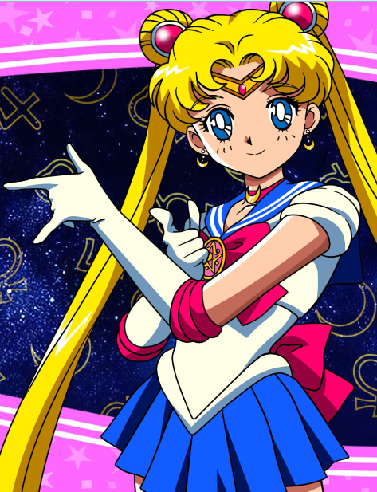
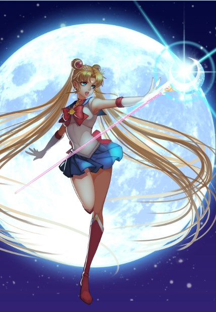
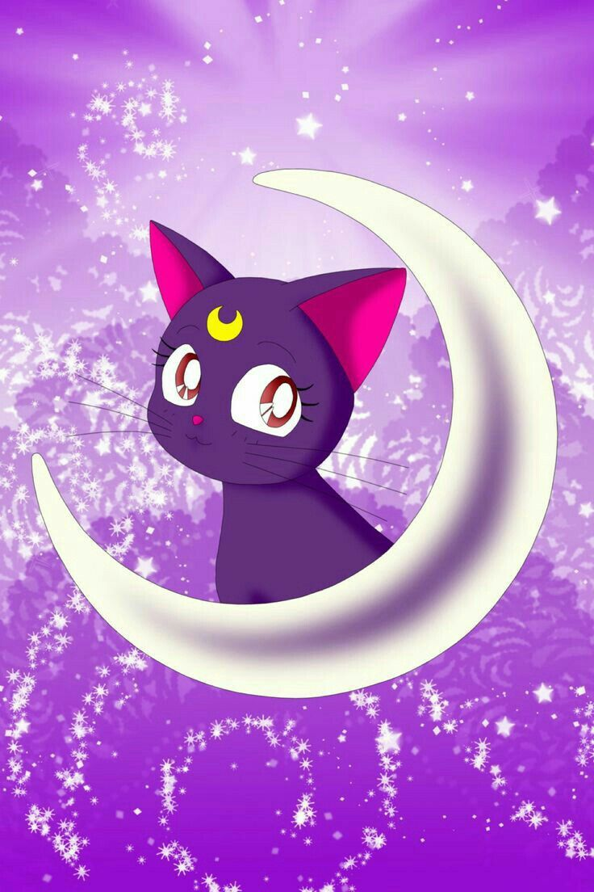

Сейлор Мун
Сейлор Мун — название японской франшизы, созданной Наоко Такэути.
Обычно ей приписывают популяризацию концепции команды
девочек-волшебниц — так же, как и вообще «оживление» жанра махо-сёдзё.
Данное аниме было признано журналом Animage лучшим аниме 1993 года.



Сюжет
В далёком прошлом на Луне существовало королевство — Серебряное Тысячелетие.
Оно мирно сосуществовало с Землёй. Принц Земли Эндимион и принцесса Луны Серенити
полюбили друг друга, но люди, охваченные тёмной силой, напали на Серебряное Тысячелетие.
Воспользовавшись силой Святого серебряного кристалла, королева Серенити сумела остановить
захватчиков, но её королевство было уничтожено, а сама она умерла. Всё, что она смогла
сделать — это устроить так, чтобы её дочь и её воины-хранители родились вновь в будущем
в мирное время и смогли прожить там счастливую и спокойную жизнь.
Главная героиня «Сейлор Мун» — Усаги Цукино (в английском переводе — Банни
Цукино; яп. 兎 (усаги) и англ. bunny — «кролик»). Она была обычной
школьницей, пока не встретила говорящую кошку Луну. Луна помогла
Усаги пробудить свои силы и научила девушку превращаться в Сейлор Мун, чтобы
сражаться со злом, пытающимся захватить Землю. В сражениях к ней присоединились
и её подруги — другие воины в матросках.
С развитием сюжета сейлор-воины узнают больше о своих врагах и силе Хаоса, направляющей их.
В то же время раскрывается правда об их прошлых жизнях и о будущем Солнечной системы.
Сюжет делится на пять основных сюжетных арок, каждая из которых была представлена и в манге,
и в аниме. Их названия — арка «Тёмное королевство», арка «Чёрная Луна» (Sailor Moon R),
арка «Бесконечность» (Sailor Moon S), арка «Мечта» (Sailor Moon Supers) и арка «Звёзды»
(Sailor Stars). В аниме демонстрируется дополнительно Макайдзю (небольшая арка в начале
второго сезона), а первые серии пятого Sailor Stars завершают сюжет предыдущих серий.